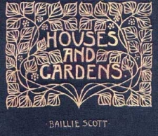
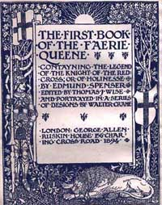

Arts and Crafts. A buyers Guide to the Decorative Arts. Malcolm Haslam. Macdonald Orbis. 1988. London. ISBN O-356-15633-8
The Arts and Crafts Movement. Elizabeth Cumming and Wendy Kaplan.Thames and Hudson Ltd. London. 1991 reprinted 1995. ISBN 0-500-20248-6.
The Arts and Crafts Movement. Gillian Naylor. 1971 Studio Vista London. ISBN 0 289 709121
Arts and Crafts in Britain and America. Isobelle Anscome & Charlotte Gere Academy Editions. London 1978. ISBN SBN 85670 4261
The Arts and Crafts House . Adrian Tinniswood. Michael Beazley. London 1999. ISBN 1 84000 0627
Arts and Crafts in Newlyn 1890 to 1930 Hazel Berriman Newlyn Orion Newlyn Art Gallery 1986. reprints available.
Nineteenth Century Design. From Pugin to Mackintosh. Charlotte Gere and Michael Whiteway. Weidenfield and Nicholson. London. 1993. ISBN 0297 830686.
Arts and Crafts Architecture. Peter Davey. Phaidon. 1985 reprinted 1995 ISBN 07148 28742.
Pioneers of Modern Design. Nicholaus Pevsner. Penguin. London. The Museum of Modern Art. 1949
British Furniture. 1880-1915. Pauline Agius. Antique Collectors Club 1978 ISBN 0 90202876 6
Victorian and Edwardian furniture and Interiors . Jeremy Cooper. Thames and Hudson 1987. ISBN 0-500-28022-3
Gimson and the Barnsleys. Wonderful furniture of a commonplace kind. Mary Greenstead. Alan Sutton Publishing. 1980 reprinted 1996. ISBN 0-86299-991
Good Citizens Furniture: The Arts and Crafts Collections at Cheltenham. Carruthers,A and Greensted, Mary. London 1994
Simplicity or Splendour. Arts and Crafts Living: Objects from the Cheltenham Collection. Annette Carruthers and Mary Greensted.Cheltenham Art Gallery and Museums. London 1999. ISBN 085331 7798
C. R. Ashbee and the Guild of Handicraft. Alan Crawford. Cheltenham Art Gallery and Museum. 1981
C.F.A. Voysey. Wendy Hitchmough. Phaidon.1995
Truth Beauty and Design. Adrian J Tilbrook Exhibition Catalogue Fischer Fine Arts Society. Fischer Fine Arts Limited. London.
Textiles of the Arts and Crafts Movement. Linda Parry. Thames and Hudson. London.1988. ISBN 0-500-27497-5
The Glasgow Style. Gerald and Celia Larner. Astragal Books. London. 1980 ISBN 906525136
Charles Rennie Mackintosh. Anthony Jones. Studio Editions. London. 1990 ISBN 85170 412 4
Glasgow Girls. Women in Art and Design 1880 1920. Jude Burkhauser. Cannongate. Edinburgh. 1990

Charles Rennie Mackintosh. Ed Wendy Kaplan. Glasgow Museums. Abbeville Publishers. London. 1996 ISBN 1- 55859-791-3
The Enchanted World of Jessie King. Colin White.Cannongate Publishing. 1989 London. ISBN 0-86241-235-8
The Studios of Frances and Margaret Macdonald. Janice Helland. Manchester University Press. Manchester and New York. 1996. ISBN 071904783 8
William Morris: Decor and Design. Elizabeth Wilhide. Pavilion Books. London 1991. ISBN 185145 5086
William Morris. Fiona MacCarthy Faber and Faber 1994
William Morris. Linda Parry. Catalogue for the William Morris Exhibition. Victoria and Albert Museum. London 1996. ISBN 0 8566 74427
All things Bright and Beautiful;Design in Britain 1830 to today. Fiona MaCarthy George Allen and Unwin 1974
Liberty Style. The Classic Years 1898 1910 Mervyn Levy. Weidenfield and Nicholson London 1986
The Liberty Style. Victor Arwas. Academy Editions . London. 1979
The Designs of Archibald Knox for Liberty and Co. A. J. Tilbrook. Richard Dennis. Somerset. 1995 ISBN 0 903 685 37 x
Pugin A Gothic Passion. Ed Paul Atterbury and Clive Wainwright. Yale University Press in Collaboration with the Victoria and Albert Museum. 1994. ISBN 0-300-06012-2
Kenneth Clarke. 1974 The Gothic Revival. Icon Ed.
William De Morgan. William Gaunt and CMD Clayton Stamm. De Morgan Foundation 1971. Studio Vista Publications . London ISBN 289 701414